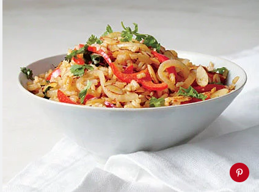

This Chinese-style cauliflower fried rice is a healthy, low-carb dish that’s
hearty enough to serve as a main course.Cauliflower rice — or cauliflower grated into
rice-like bits — has been all the rage for a while.
100
Vegetable Fried Rice
Indo-Chinese Cuisine
Veg fried rice or vegetable fried rice is a chinese style of
rice dish where rice is fried well along with vegetables in some chinese sauces.
120
Schezwan Fried Rice
An Indo-Chinese Cuisine
Popular in Indo-Chinese restaurant menus.Unlike the regular
fried rice,schezwan fried rice is hot and spicy with bursting flavors of ginger,garlic,soya
sauce & red chilli paste.
70
Paneer Fried Rice
Paneer fried rice is one of the QUICK and EASY weeknight dinners around! This
is a delicious variation of routine Chinese fried rice in which paneer cubes are added and
sautéed along with other spices and veggies.
100
Pineapple Fried Rice
This vegetarian pineapple fried rice recipe is classic Thai food.This healthy
pineapple fried rice is a lovely blend of sweet and savory flavors, seasoned with turmeric
and coriander for a more earthy flavor.
100
Fried Brown Rice
This brown rice version makes use of crispy-tender broccoli, red peppers and
carrots, but feel free to substitute whatever veggies you have on hand.

90
Yang Chow Fried Rice
This is a vegetarian version of the classic Chinese dish that traditionally
includes shrimp and ham. The fried rice can stand alone as a one-dish meal; however, if you
desire a crunchy side, fills the bill.
80
Corn Fried Rice
Sweet corn in this recipie lends a good sweet aroma to the rice that is
unique.Made without sauce or vinegar,has a good flavor from the extra virgin olive oil,fresh
powder,capsicum, apart from the sweet corn.
110
Jeera Fried Rice
Jeera rice or Zeera rice is an Indian and Pakistani dish consisting of rice
and cumin seeds.It is a popular dish in North India and Pakistan as an everyday rice dish.
80
Ghee Rice
This south Indian ghee rice recipe prepares simple yet irresistibly aromatic
mildly spiced rice by steaming ghee sautéed rice grains, nuts and mixed spices.